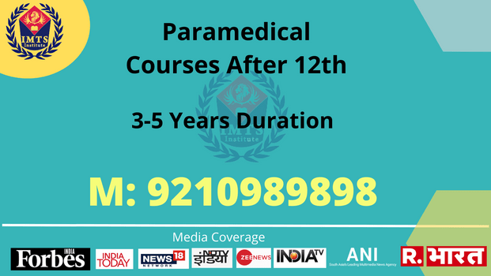
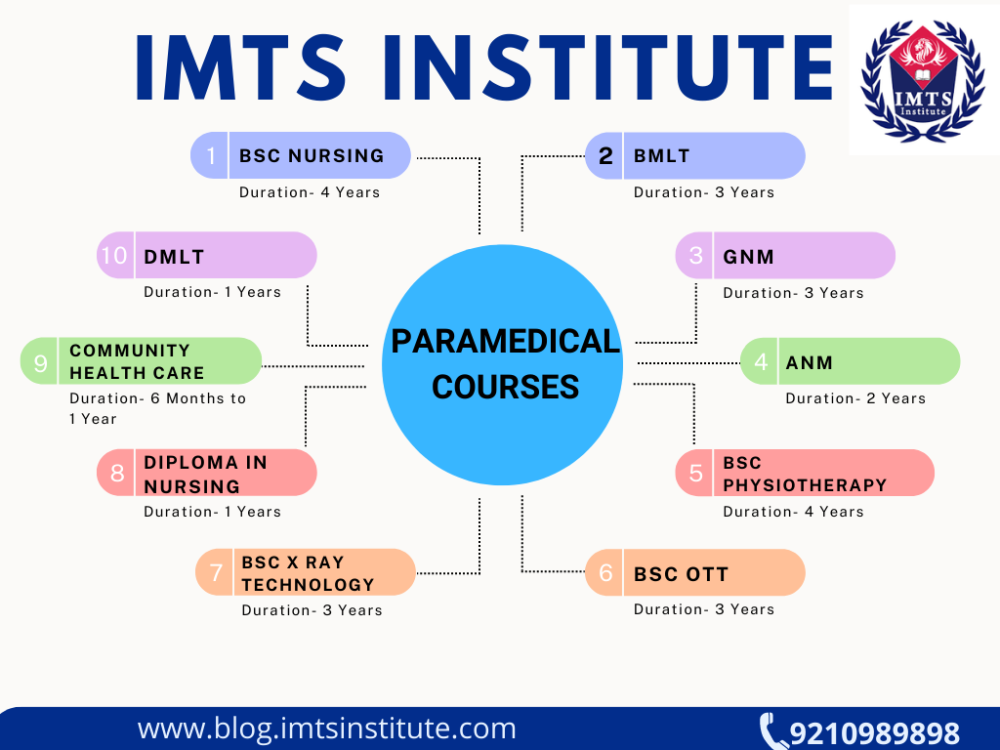

paramedical courses after 12th
Application Form 2022
Get Application Form & Fees Structure
Prospectus | Eligibility | Duration
Paramedical courses are skilled-based courses, same as medical courses, practical exposure is provided to the students. Lab Testing, Pathology, Dental, and Nursing are some types of medical courses that are available for students who want to have a professional career. Get a complete course guide through the paramedical courses list PDF.
Courses After 12th how many years – they are available at many levels of duration about 1 to 4 years. Students can also inherit the knowledge of paramedical through several certificate courses. Paramedical Courses After 12th Without NEET are also available for admission to eligible students.
In India, the sector of paramedical courses has grown by 56% in the past 10 years. Regional paramedical institutes in India have created about 2.5 million new jobs, which could reach 3.3 million by 2022. Admission to paramedical courses after 12th is subject to passing the entrance exam or the merit list process as suited by the institution.
In this article, we have detailed information related to the paramedical courses, fees, scope and career options for the students learning. IMTS Institute has career counseling sessions available for students who want guidance; a WhatsApp chat feature is introduced for precise information.
What is Paramedical Course?
पैरामेडिकल कोर्स क्या है? Paramedical Course comprises all the studies about medical equipment, diagnosis, treatment and therapy. Professionals in the Paramedical Sciences field are known as paramedics. The paramedical field comprises services and facilities that help doctors diagnose, medicate, and treat patients better. It is important that students make sure they are passionate about this profession before they decide to pursue it. There are several career opportunities for young aspirants in India and abroad due to the increasing demand for skilled paramedical professionals.
पैरामेडिकल कोर्स क्या है? Paramedical Course comprises all the studies about medical equipment, diagnosis, treatment and therapy. Professionals in the Paramedical Sciences field are known as paramedics. The paramedical field comprises services and facilities that help doctors diagnose, medicate, and treat patients better. It is important that students make sure they are passionate about this profession before they decide to pursue it. There are several career opportunities for young aspirants in India and abroad due to the increasing demand for skilled paramedical professionals.
Paramedical Courses After 12th Highlights
| Course Name | Paramedical Courses |
|---|---|
| Duration | 3-5 Year |
| Admission Process | Online |
| Eligibility | 12th Pass with 45% marks |
| Offered By | IMTS Institute |
| Approved By | UGC / DEB |
| Fee Structure | INR 22,500 – INR 1,55,500 |
| Level | Bachelor Level |
Why choose Paramedical courses as a career?
Paramedical courses after 12th are aimed to teach students about the healthcare industry. Increased demand for well-trained professionals such as pharmacists, physiotherapists, nurses, optometrists, physiotherapists, nurses, and speech therapist all comes in paramedical job careers. This area is expected to 35% increase in the future, which is why the paramedical course is popular in India & abroad. Paramedical courses are ideal for those looking for an alternative to the MBBS degree & other medical degrees.
Paramedics are qualified to identify illnesses in the human body. Students in these courses learn about services such as physiotherapy, nursing, and radiology that are supported and overseen without the need for a doctor. Aside from doctors, paramedics are regarded as the backbone of the healthcare industry. Paramedics, sometimes known as auxiliary health forces, aid doctors in emergency situations.
Famous Courses After 12th
Type of Paramedical Courses After 12th
They are categorized into different types and levels. Generally, Paramedical courses are divided into 3 groups. These types of medical courses are named below:
-
Degree Paramedical course: The duration of the typical paramedical degree course is 3 to 5.5 years in India. Courses like BSc Nursing, BMLT, BPT & more are popular UG programs.
-
Paramedical Diploma course:The length of diploma-level paramedical programs is 1 to 3 years. Courses like Diploma in Nursing and Diploma in Medical Technician are popular paramedical diploma programs.
-
Paramedical Certificate course:The duration of paramedical certificate courses is six months to 1 year in India.

Top Recruiters for Paramedical Courses
-
Laboratory
-
Operation Theatre
-
Nursing Homes
-
Clinical Research
-
Educational Institutions
-
Forensic Labs
-
Blood Banks
-
Private Hospitals
-
NGO
-
Government Medical Camp
Courses After 12th
Discussion with AICTE Chairman
Courses After 10th
Distance Education Courses
- BA Distance Education
- BBA Distance Education
- BCA Distance Education
- Bcom Distance Education
- Bed Distance Education
- BHM Distance Education
- Blis Distance Education
- Bpharma Distance Education
- Bsc Distance Education
- Bsw Distance Education
- Btech Distance Education
- BTS Distance Education
- Dpharma Distance Education
- LLB Distance Education
- LLM Distance Education
- MA Distance Education
- MBA Distance Education
- MCA Distance Education
- Mcom Distance Education
- Med Distance Education
- Mlib Distance Education
- Mpharma Distance Education
- Msc Distance Education
- Msw Distance Education
- MBA IT Distance education
- Phd Distance Education
- MSC IT Distance education